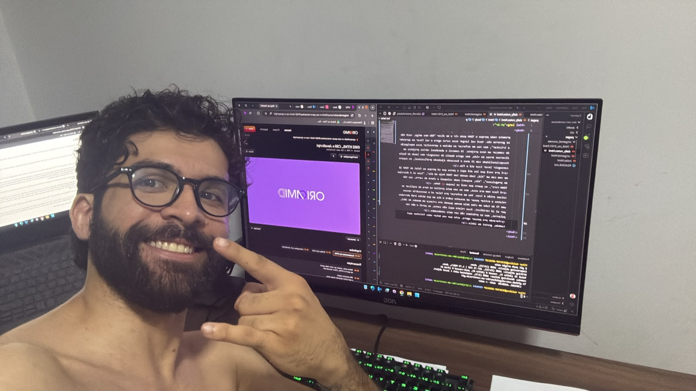
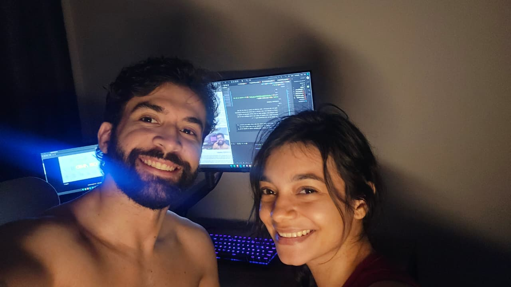
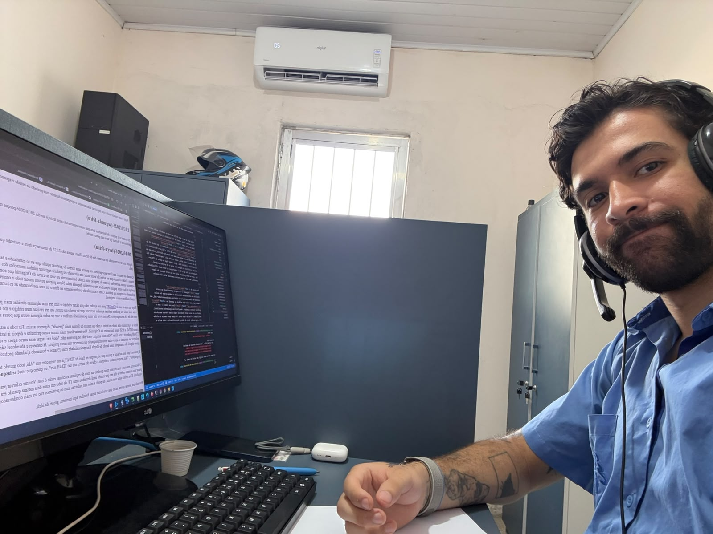

Aqui é um espaço onde vou registrar diariamente o que pensei durante esse período de estudo e aprendizado, as novas ideias, dificuldades e etc.
Eu comecei o projeto de fato nessa data mas estou escrevendo esse texto já no dia 20/10/2026 porque me deu preguiça naquela noite e também porque eu precisava ir dormir (já tava um pouco tarde).
Agora sim to escrevendo no mesmo dia do texto. Bom, agora são 21:35 de uma terça-feira e eu tenho que acordar cedo amanhã pra ir pro treino de Jiu-jitsu 06h.
Quando eu pensei em fazer esse projeto, eu queria uma forma de praticar aquilo que eu to estudando e também já fazer resumos e anotações sobre os temas. Então a forma que eu achei foi essa: criar um site onde eu poderia registrar minhas anotações dos estudos e de quebra já ir praticando enquanto organizo essas anotações dentro do próprio site. Então basicamente eu vou no curso da Origamid que comprei, assisto a aula do dia e depois venho aqui no código e faço uma página específica pro conteúdo daquela aula. Nessa página eu vou anotar todo o conteúdo que eu vi, do meu jeito, e já ir praticamente e aplciando exemplos na prática. Com o acumulo do conhecimento no futuro eu vou melhorando as estruturas aos poucos e deixando o projeto com um visual melhor e mais amigável.
Hoje em dia eu uso o ChatGPT pra me ajudar, não pra fazer código e sim pra tirar algumas dúvidas mais pontuais, me passar exemplos de situações da vida real onde eu poderia aplicar aqueles recursos que to vendo no curso, ou pra revisar meu código e me dizer onde acertei e onde errei. Hoje em dia só uso ele de IA nesse projeto. Depois vou dar uma pesquisada melhor e ver se acho alguma outra que possa agregar também, tipo o Claude ou o Gemini.
Hoje é o primeiro dia onde eu botei a mão na massa de forma mais "pesada", digamos assim. Fiz toda a estrutura e conteúdo da página 01 do módulo 01 do curso HTML e CSS para Iniciantes da Origamid. Vou tentar focar mais nesse curso primeiro e depois ir testando os outros. Não prometo nada porque o TDAH pode vir e me dizer "Não meu amigo, você não se governa não. Você vai largar esse curso agora e vai focar em aprender a tricotar", mas vou me esforçar ao máximo e aproveitar essa empolgação de começar um novo projeto. Já comecei e abandonei vários projetos em diversas áreas da vida, mas agora depois de conseguir meu laudo de Dupla Excepcionalidade com 25 anos e buscando ajudando profissional, eu espero conseguir levar isso até o fim.
E pra você que leu até aqui e pensa que só porque eu falei de TDAH já me vem com um "Alá, todo mundo tem TDAH hoje em dia", "Isso ai é desculpa de preguiçoso", "Ain, esqueci onde coloquei a chave do carro, sou tão TDAH rsrs", eu quero que você se lasque :D hehe.
O foco nem era esse, mas eu sou meio prolixo na hora de explicar as coisas então é isso. Vou me esforçar pra falar só o necessário nesses relatos e evitar puxar um assunto sobre o dia em que minha irmã derrubou uma TV de tubo em cima dela mesma quando era criança em meados de 2011, por ai (é verídico). Esse relato aqui não conta, eu perdi a mão nas palavras, mas os próximos vão ser mais condensados.
Parando pra pensar agora, acho que vou botar umas fotinhas aqui também, gostei da ideia.

Hoje foi bem tranquilo. Esse conteúdo do começo eu meio que já sei, então to revendo mais como revisão e como forma de me manter praticando isso criando novas páginas aqui no site (minha namorada me obrigou a praticar hoje e ela acabou de soltar uma risada maléfica aqui do meu lado assim que me viu escrevendo isso '-' ).
Nos dias anteriores dessa semana não tive muito tempo pra praticar, só voltei hoje no sábado, mas na próxima vou ter mais tempo e vai sair mais coisas legais e supimpas (top palavras usadas na década de 50, ao lado de "pocilga").

E vamos para o relato de hoje. Hoje assistí a aula 03 e 04 do módulo 01 do curso de HTML e CSS para Iniciantess. Foram aulas bem simples, mais uma vez é mais uma revisão do que um conhecimento mais técnico em si. A partir do módulo 02 já vão começar os conteúdos mais técnicos, então vai dar pra eu praticar melhor nas páginas e quando começarem as partes de estilos ai vai ficar mais legal ainda.
Agora to vendo o jogo do Flamengo, começou perdendo pro Atlético-MG mas virou ainda no primeiro tempo pra 2x1. Vou voltar agora pra ver o segundo tempo. Até a próxima, futuros leitores (até o momento só minha namorada quem lê isso :D). Na próxima aula vamos ver sobre as tags em HTML.
Fiquei uns dias sem mexer aqui. É normal porque eu faço muito isso de começar algo e quando a empolgação inicial acaba eu abandono, porém nesse caso foi mais uma pausa. Eu não desisti do desenvolvimento web e nem de construir esse projetinho, mas pensando em tantas outras coisa ao mesmo tempo acabei deixando um pouco pra trás. Agora to voltando e to me sentindo mais motivado de novo pra continuar estudando desenvolvimento web em paralelo com o xadrez.
Levei mais um menos umas 2h (to mexendo no trabalho então preciso ficar parando várias vezes) eu fiz hoje mais 3 páginas novas, no caso foram as aulas sobre Plugins e Atalhos do módulo 02 do curso de HTML e CSS para Iniciantes. Os conteúdos dessas aulas mais uma vez foram bem básicos, nada que eu já não tivesse visto antes, então a parte mais "complicada" mesmo foi só construir as páginas html. Quero chegar logo na parte de CSS pra começar a estilizar as páginas das aulas e do projeto em geral. Atualmente eu acho que o CSS é a parte que eu tenho mais dificuldades. Foi o que eu menos pratiquei então vez ou outra esqueço de alguns conceitos, mas nada que uma revisão com essas aulas não resolva.
Esse curso da Origamid eu comprei aproveitando um acesso vitalício que eles estavam oferencendo e também porque tem muito conteúdo bem interessante pro meu objetivo como desenvolvedor web, mas a maior parte das coisa que sei hoje eu aprendi no Curso em Video com o professor Gustavo Guanabara. Uma plataforma igualmente sensacional, gratuita e com aulas muito didáticas e que ainda oferece emissão de certificados ao final de cada curso. Pra quem quer começar a estudar sobre programação, banco de dados, desenvolvimento...vale muito a pena. Futuramente quem sabe eu faça umas páginas com resumos pra alguns cursos de lá também.

Hoje eu fiz duas páginas novas do curso de HTML e CSS: a 0207 e a 0208. Agora ta começando a ficar mais interessante por que ta entrando a parte de estilização, que era justamente a parte que menos pratiquei. Claro que ainda ta no início e tem muita coisa nova ainda pra aprender e revisar também, mas já to gostando de como ta indo, to conseguindo manter uma certa constância criando quase que uma página por dia e praticando o que vejo na aula. Ontem eu até mexi também mas não cheguei a registrar nenhuma daily. Ultimamento to fazendo mais aqui no trabalho mesmo, em casa só me da vontade de ir dormir e descansar rsrs. Depois eu vou deixar essa página aqui também mais bonitinha, mas agora to com preguiça. Vai ficar pra próxima. Hoje ta sendo um dia meio tenso aqui no trabalho, cabeça cheia, ai pensei em dar uma mexida aqui no site pra distrair um pouco e acabei fazendo mais do que eu imaginei. É isso ai, vamo que vamo.